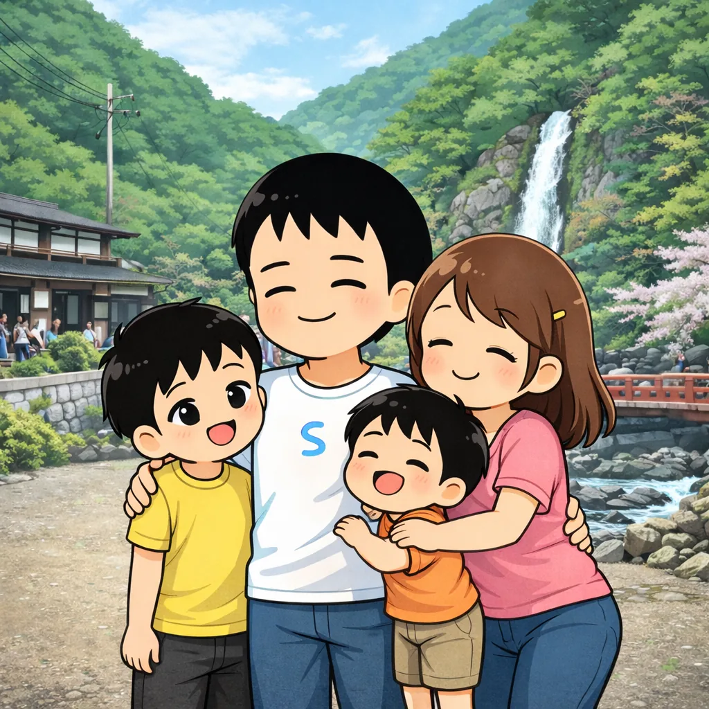
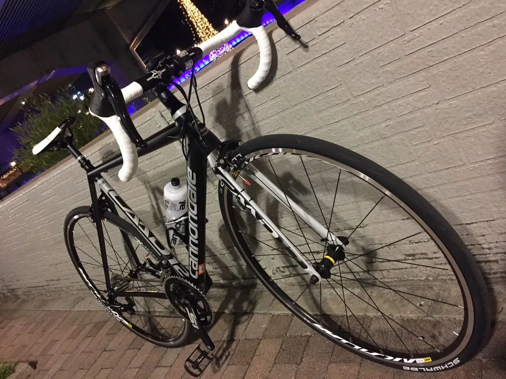

01
伝わる構成
ただ見た目を整えるだけでなく、見る人が迷わず必要な情報へたどり着けるよう、 文章の流れや余白、ボタンの配置まで意識して制作します。
Profile / Web Coder
本業と並行しながら、朝と夜の時間を使ってWeb制作に取り組んでいます。 限られた時間の中でも、ひとつひとつの確認を丁寧に行い、 安心して任せてもらえる制作を心がけています。


制作で大切にしていること
ただ見た目を整えるだけでなく、見る人が迷わず必要な情報へたどり着けるよう、 文章の流れや余白、ボタンの配置まで意識して制作します。
IllustratorやFigmaのデザインカンプをもとに、余白・文字間・レスポンシブ時の見え方まで確認しながら、 細部まで丁寧にコーディングします。
Chatworkなどを使ったやり取りにも対応し、確認事項や進捗をわかりやすく共有します。 小さな修正や公開後の調整も、気軽に相談してもらえる関係を大切にしています。
できること
Work Style
Worksに掲載している自主制作に加えて、掲載外の実務案件も複数対応しています。 Chatworkでの確認・報告、GitHubやGitLabを使った共有、AIツールを活用した実装補助など、 スムーズに進めるための環境づくりも大切にしています。